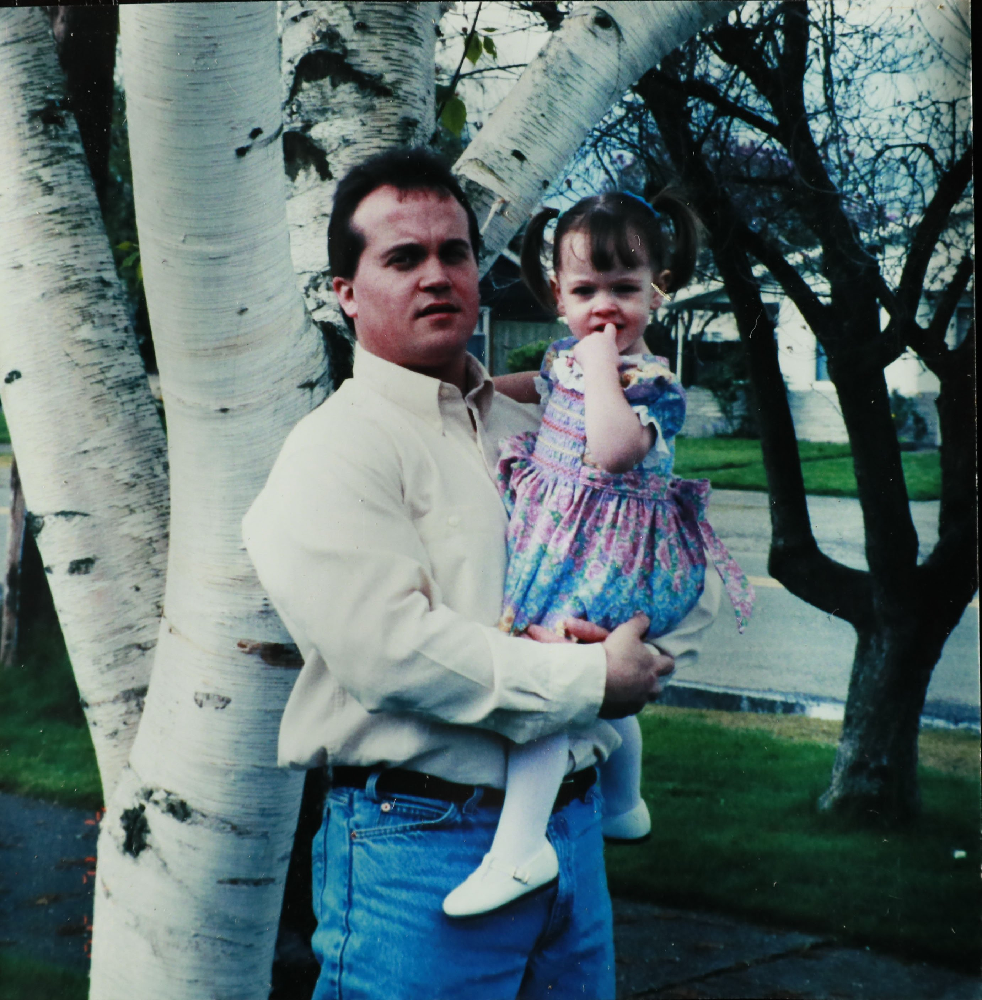
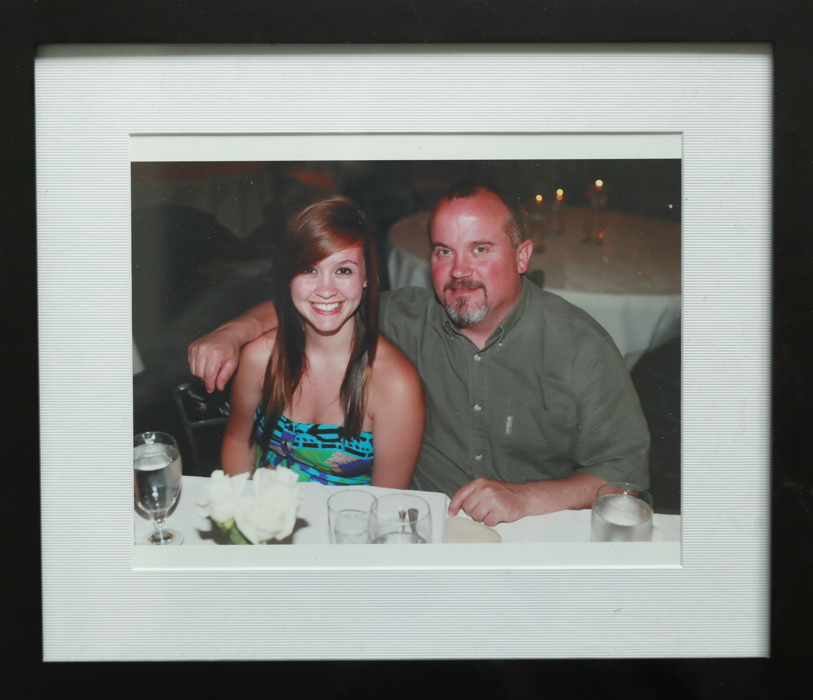
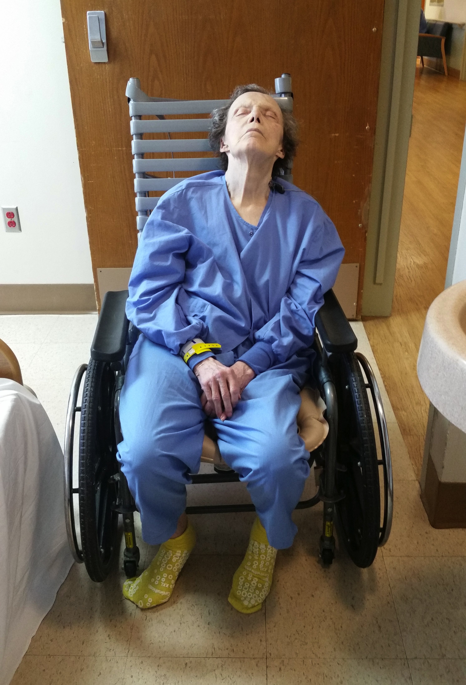
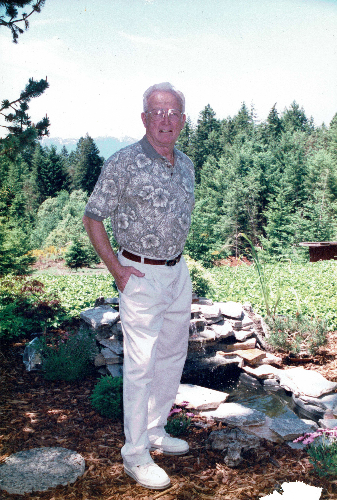

<%= t.renderMarkdown(archieml.text2.section1) %>
You can support watchdog journalism
Make a tax-deductible donation to The Seattle Times Investigative Journalism Fund, and subscribe to The Seattle Times.
<%= t.renderMarkdown(archieml.text2.section2) %>
<%= t.include("_facility-map.html") %>
<%= t.renderMarkdown(archieml.text2.section3) %>
“That seems like a big, big red flag.” - Jim Vollendroff, former director of King County Behavioral Health and Recovery Division
<%= t.renderMarkdown(archieml.text2.section4) %>
<%= t.include("_kresch.html") %>
<%= t.renderMarkdown(archieml.text2.section5) %>
<%= t.include("_bubbleChart.html") %>
<%= t.include("_bubbleChartMobile.html") %>
<%= t.renderMarkdown(archieml.text2.section6) %>
“Our role in this structure is to really work with the facility to help them be successful in doing their job better.” - Nate Weed, director of the state Department of Health’s Office of Community Health Systems
<%= t.renderMarkdown(archieml.text2.section7) %>
CHART: U.S. MAP
<%= t.renderMarkdown(archieml.text2.section8) %>
<%= t.renderMarkdown(archieml.text2.section9) %>

Eric Descalso holds his daughter Danielle in a family photo. (Courtesy of Descalso family)
<%= t.renderMarkdown(archieml.text2.section10) %>
The acquisition “is absolutely going to be a gem for us,” Acadia’s president told financial analysts the following spring
<%= t.renderMarkdown(archieml.text2.section11) %>
<%= t.renderMarkdown(archieml.text2.section12) %>
Cascade Behavioral Health Hospital in Tukwila was known as Riverton Hospital until it was sold to Acadia Healthcare in 2013. It offers treatment for psychiatric and addiction disorders. (Erika Schultz / The Seattle Times)
<%= t.renderMarkdown(archieml.text2.section13) %>
Police officers were responding to Cascade Behavioral so often that in October of 2016, Tukwila’s police chief designated it a “chronic nuisance property.”
<%= t.renderMarkdown(archieml.text2.section14) %>
<%= t.renderMarkdown(archieml.text2.section15) %>
“I’ve got grandkids now and I’d like to see them grow up,” he told hospital staff. “I’m here to quit and get healthy.”
<%= t.renderMarkdown(archieml.text2.section16) %>
<%= t.renderMarkdown(archieml.text2.section17) %>
<%= t.include("_prerollVideo.html", { file: "codi_titlecard.mp4", id: "6068745312001", runtime: "3:22" }) %>
xxxxxxx (Erika Schultz, Gabriel Campanario & Lauren Frohne / The Seattle Times)
<%= t.renderMarkdown(archieml.text2.section18) %>

Danielle Descalso and her dad, Eric Descalso, "were best friends," says her mother, Codi Branson. (Courtesy of Descalso family)
<%= t.renderMarkdown(archieml.text2.section19) %>
“Maybe I should have checked into it more,” said Codi Branson, Eric Descalso's ex-wife. “It’s, like, what did I miss?”
<%= t.renderMarkdown(archieml.text2.section20) %>
In Colorado, hospitals have to report everything from unexplained deaths to threats of physical harm, which regulators must investigate and “disseminate … to the public in a form that will assist people in making informed choices among health care facilities,” according to state law.
<%= t.renderMarkdown(archieml.text2.section21) %>
<%= t.include("partials/_ad.html", { type: "square" }) %>
<%= t.renderMarkdown(archieml.text2.section22) %>
<%= t.renderMarkdown(archieml.text2.section23) %>
<%= t.renderMarkdown(archieml.text2.section24) %>
<%= t.renderMarkdown(archieml.text2.section25) %>
Jim Howell, 66, fell into depression after a shoulder injury. For days, he talked about his hopelessness, and took his own life about two weeks after arriving at Cascade Behavior Hospital. (Courtesy of Bonnie Jaeger)
<%= t.renderMarkdown(archieml.text2.section26) %>
That night, hospital staff made a note of Howell’s status every 15 minutes, as they had since his arrival. The record shows he was in bed all morning until 5:30 a.m., which is then crossed out with a large “X.”
<%= t.renderMarkdown(archieml.text2.section27) %>
“Cascade respectfully refutes as inaccurate any allegation that staff were not properly trained to respond to this unfortunate incident.” - Michael Uradnik, CEO of Cascade’s Behavioral Hospital.
<%= t.renderMarkdown(archieml.text2.section28) %>
<%= t.renderMarkdown(archieml.text2.section29) %>
<%= t.renderMarkdown(archieml.text2.section30) %>
Tukwila police and fire responded to a reported assault at Cascade Behavioral but, upon arrival, “a nurse came out and said there was no assault and sent them on their way,”
<%= t.renderMarkdown(archieml.text2.section31) %>
<%= t.include("partials/_ad.html", { type: "square" }) %>
<%= t.renderMarkdown(archieml.text2.section32) %>

Carolyn Tomich, 76, was photographed at Cascade Behavioral Hospital the day she fell and broke her hip in June 2017. The fracture contributed to her death a few weeks later. (Courtesy of Tracee Tomich)
<%= t.renderMarkdown(archieml.text2.section33) %>

Jim Mason, 92, died after a fall at Cascade Behavior Hospital that caused a hemorrhage and "blunt force injuries to the head" in May 2018. (Courtesy of Tim Johnson)
<%= t.renderMarkdown(archieml.text2.section34) %>
“They were the most attentive, caring, compassionate people. She was more at peace, more happy there than anytime in the last 15 years.” - Don Kay, husband of Marilyn Ham-Kay
<%= t.renderMarkdown(archieml.text2.section35) %>
- Reporter: Daniel Gilbert
- Project editor: Ray Rivera
- Photographer: Erika Schultz
- Photo editor: Fred Nelson
- Video editor: Lauren Frohne
- Developer and graphic artist: Emily M. Eng
- Illustrator: Gabriel Campanario
- Engagement: Taylor Blatchford
- Project coordinator: Laura Gordon
CREDITS
You can support watchdog journalism
Make a tax-deductible donation to The Seattle Times Investigative Journalism Fund, and subscribe to The Seattle Times.